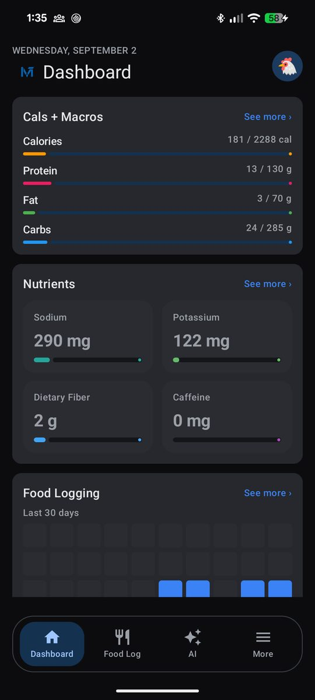
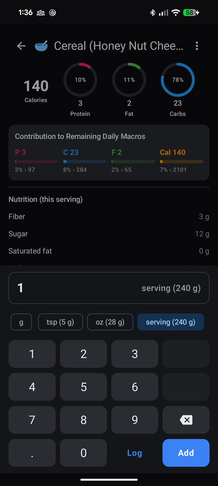
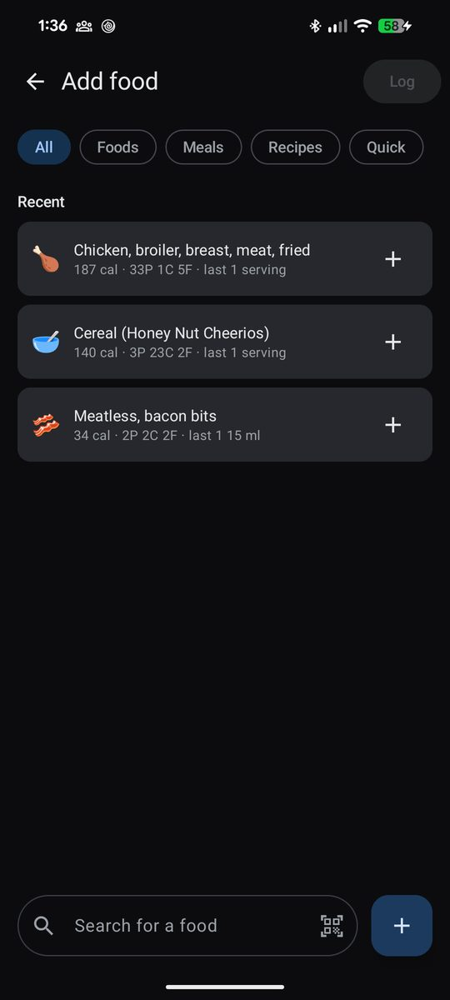

WhyThe problem
Every calorie tracker I tried was online-first: a spinner before the food log opened, a subscription to see my own history, and a database that lived on someone else's server. I wanted the opposite. The log should open instantly on a plane, the nutrient data should be Canadian, and my history should be mine to export as a file.
So the design rule from day one was that the phone is the source of truth. A backend, if it ever exists, is a sync layer bolted on afterwards, never the foundation.
WhatWhat it does
- Onboarding that computes a calorie and macro target from body stats (Mifflin–St Jeor, or Katch-McArdle when body fat is known), unit-tested against a reference calculator.
- A food log by hour block with a week strip, macro pills and rings, a micronutrient box, drag-to-reorder, and swipe-to-delete.
- Three-source food search: the bundled Canadian Nutrient File, the user's own foods, recipes and meals, and Open Food Facts for branded products by name or barcode, with an offline fallback.
- On-device barcode scanning with CameraX and a bundled ML Kit model. No API key, no network, and a stabilisation step that requires the same code across several frames before accepting it.
- Trends, weight tracking, a logging calendar with streaks, JSON backup and restore, light and dark themes.
- An opt-in AI assistant that estimates macros from text or a photo and stages the result for review before anything is logged. Bring your own key; it's encrypted with a hardware-backed Android Keystore key and never leaves the device except to the model endpoint.




DecisionThe one load-bearing decision
A logged entry is a frozen snapshot plus provenance. When you log 150 g of chicken, the nutrient columns are scaled and written into the entry at that moment. Editing the chicken later, or deleting it, never rewrites what you ate last Tuesday. Alongside the snapshot, each entry records where it came from: source type, source id, and the unit label. That's enough to reopen the entry, rescale it, and log it again.
The corollary is that a day is a query, not a record. Daily totals come from GROUP BY date over the entries. There is no daily-totals table, because a stored total would drift from the entries the first time anything was edited.
Both halves are load-bearing. Snapshots keep history honest; provenance keeps it useful. It is also why the bundled nutrient database can live entirely outside Room: logged CNF foods are reopened via provenance, not via a join.
Hard partsThings that were harder than they looked
Eight migrations, zero data loss. Android's Room library offers a one-liner that silently wipes the database when the schema doesn't match. It is banned in this codebase. Every schema change is a real, additive migration, with the exported schema JSON committed so the next migration has something to diff against. A schema-mismatch crash names the offending column in the log, and that is the debugging entry point, not a reason to uninstall.
Nutrient data outside the ORM. The Canadian Nutrient File is a 2 MB read-only SQLite asset. Pulling it into Room would have coupled every future migration to a dataset I don't control, so it's opened directly, read-only, with parameterized queries, and the entity layer never assumes it can join against it.
Secrets on a device you don't control. The AI feature needs an API key, and an APK is trivially decompiled. The key is the user's own, encrypted with an AES-GCM key that lives in the Android Keystore, so only ciphertext ever touches disk. No key is embedded, committed, or logged. The threat model for this and for the planned accounts feature is written up in the repo.
NextWhat comes next
Public release first. Accounts, cloud backup and a shared food database come after, on Supabase, chosen after comparing it against Neon and Convex: it supplies server-side role enforcement through Postgres row-level security, which the security model requires, with very little backend to write. The domain and data layers are kept free of Android imports so an iOS build via Compose Multiplatform stays a restructure rather than a rewrite.